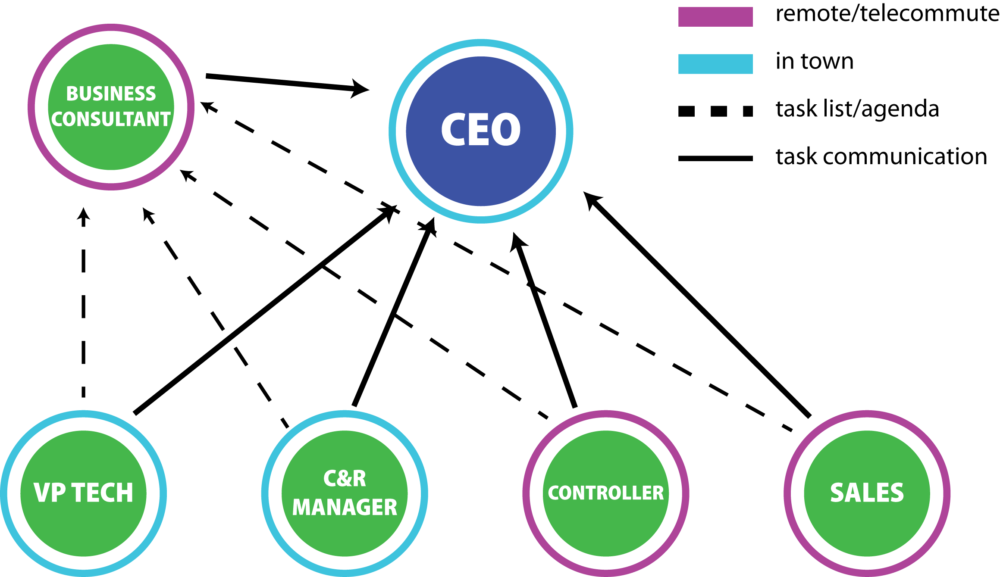
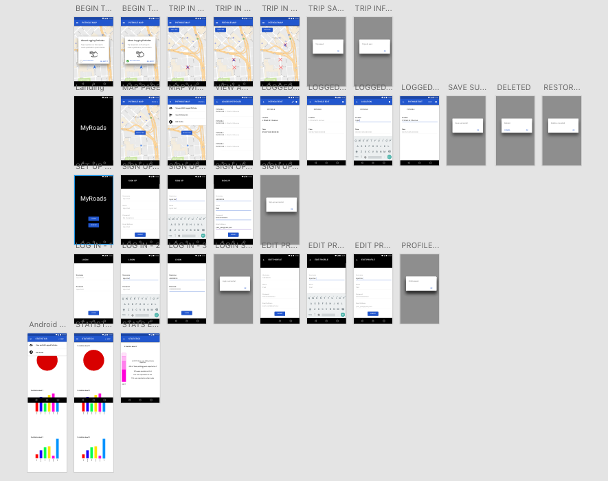
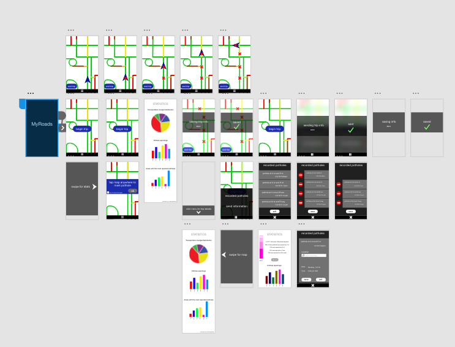
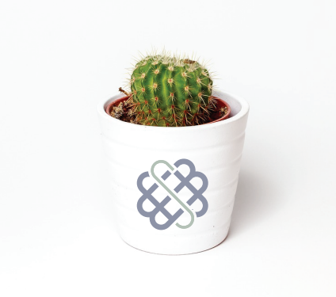
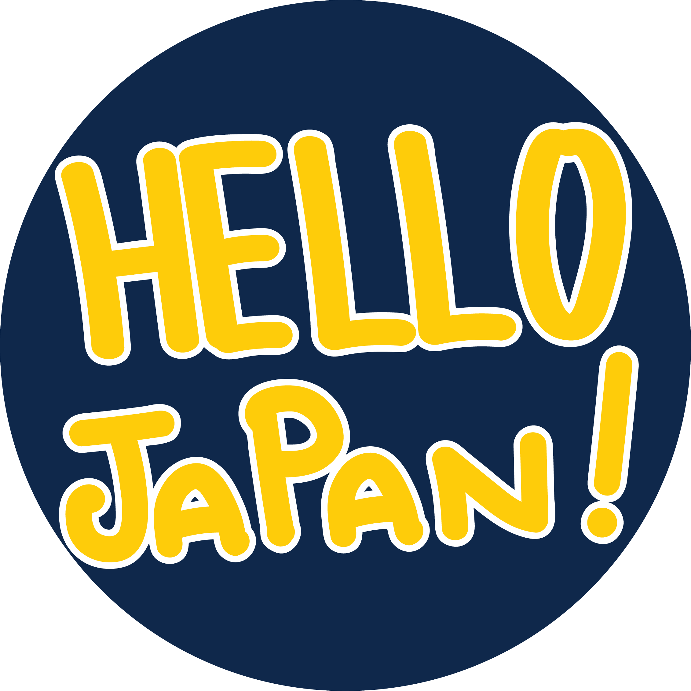

Projects
Contextual Inquiry
Client Analysis
Analysis, Research, Interviewing, Affinity notes, Affinity wall, Design brainstorming
Project Description: Work with a client. Propose a design solution to their design challenge. Conduct 5 or more interviews with relevant people. Collect these interview notes and create affinity notes. Arrange affinity notes into clusters, then into super-clusters, then into bigger clusters based on noticed trends and analysis. Present findings to client.

I worked with my team of collegues to develop an appropriate solution for my client's challenges working with virtual teams.
Interaction Design
MyRoads-Potholes in Ann Arbor
Competitive Analysis, Sketching, Storyboarding, Persona Development, Wireframing, Prototyping
Project Description: Think of a design solution that can improve your community or day-to-day life. Create personas, storyboards, and a low and mid-fidelity prototype.
Graphic Design
Identity Styleguide
Illustrator, Styleguide, Logo Development, Typographic Hierarchy, Design Principles, Color Theory
Project Description: Create a signature or logotype with free space guidelines. Design a website and a mobile version of the homepage. Design a business card with crop marks and bleeds visible. Provide your resume. Apply identity elements to a promotional item (cactus). Provide concept and design rationale. Specify identity guidelines such as colors, UI elements, typographic hierarchy etc.
Graphic Design
Just Futures Logo and Styleguide
Illustrator, Photoshop, Vector art, Styleguide
Project Description: For one logo you brainstormed, create a vector image. Create a styleguide: Specify color palette, show scalability, provide two typefaces, show color variations, create a mandatory free space guide, find 4 identity photo assets, add a t-shirt design.
Graphic Design
Cappuccino Infographic
Modular grids, Vector art, Text solutions, Color harmony

Project Description: Create an infographic for your favorite drink/fruit/zipcrit. Use vectors, alternate language name, nutrition facts, etc. in your project. Print on two tabloid-size papers.

Graphic Design
Alphabet Poster
Modular grids, Vector art, Text solutions, Color harmony

Project Description: Incorporate modular grids and background isolation to create an Alphabet poster. Use an appropriate typeface solution. Use an appropriate color solution.
Japanese Language
Hello Japan! Visual Novel
Project Description: Hello Japan! is a visual novel developed for Japanese Language Learners at the beginning level. Using game mechanics as well as illustrations, cultural notes, and video, Hello Japan! supplements most Japanese textbooks.
My role in the Hello Japan! project is to create illustrations, digital artifacts, and assist in research and grant writing.
Check out the Visual Novel.